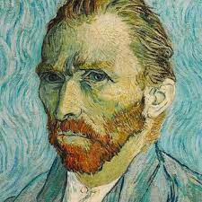
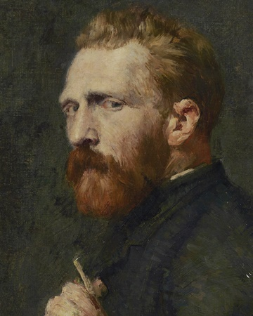

My favourite hobby is Painting. It is so fun activity to spend time on. I like sketching. My teachers and parents do appreciate my paintings. The most thing like to paint, are animated cartoon characters. It is also important to use proper colours. You can use Crayons, pencil crayons, postel colours, acrylic paint, oil pastels and many more. The great artists paint on canvas but as a beginner I just use plain paper. One day I customized my own writing pad by painting on it, that turned out so good. I have so many hobbies but drawing is my most favourite hobby. Hope you liked it!!
Scream
The Scream is the popular name given to a composition created by Norwegian Expressionist artist Edvard Munch in 1893. The original German title given by Munch to his work was Der Schrei der Natur (The Scream of Nature), and the Norwegian title is Skrik (Shriek). The agonised face in the painting has become one of the most iconic images of art, seen as symbolising the anxiety of the human condition. Munch recalled that he had been out for a walk at sunset when suddenly the setting sun's light turned the clouds "a blood red". He sensed an "infinite scream passing through nature". Scholars have located the spot to a fjord overlooking Oslo, and have suggested other explanations for the unnaturally orange sky, ranging from the effects of a volcanic eruption to a psychological reaction by Munch to his sister’s commitment at a nearby lunatic asylum. Munch created two versions in paint and two in pastels, as well as a lithograph stone from which several prints survive. Both of the painted versions have been stolen, but since recovered. One of the pastel versions commanded the fourth highest nominal price paid for an artwork at a public auction.

The Starry Night
The Starry Night is an oil on canvas painting by Dutch Post-Impressionist painter Vincent van Gogh. Painted in June 1889, it depicts the view from the east-facing window of his asylum room at Saint-Rémy-de-Provence, just before sunrise, with the addition of an imaginary village. It has been in the permanent collection of the Museum of Modern Art in New York City since 1941, acquired through the Lillie P. Bliss Bequest. Widely regarded as Van Gogh's magnum opus, The Starry Night is one of the most recognized paintings in Western art.

Mona Lisa
The Mona Lisa (/ˌmoʊnə ˈliːsə/; Italian: Monna Lisa [ˈmɔnna ˈliːza] or La Gioconda [la dʒoˈkonda]; French: La Joconde [la ʒɔkɔ̃d]) is a half-length portrait painting by Italian artist Leonardo da Vinci. Considered an archetypal masterpiece of the Italian Renaissance, it has been described as "the best known, the most visited, the most written about, the most sung about, the most parodied work of art in the world". The painting's novel qualities include the subject's enigmatic expression, the monumentality of the composition, the subtle modelling of forms, and the atmospheric illusionism. The painting is probably of the Italian noblewoman Lisa Gherardini, the wife of Francesco del Giocondo, and is in oil on a white Lombardy poplar panel. It had been believed to have been painted between 1503 and 1506; however, Leonardo may have continued working on it as late as 1517. It was acquired by King Francis I of France and is now the property of the French Republic itself, on permanent display at the Louvre, Paris since 1797. The Mona Lisa is one of the most valuable paintings in the world. It holds the Guinness World Record for the highest known insurance valuation in history at US$100 million in 1962 (equivalent to $660 million in 2019).
Van Gogh self-portrait
Van_Gogh_self-portrait_(1889) This self-portrait was one of about 32 produced over a 10-year period, and these were an important part of his work as a painter; he painted himself because he often lacked the money to pay for models. He took the painting with him to Auvers-sur-Oise, near Paris, where he showed it to Dr Paul Gachet, who thought it was "absolutely fanatical". Art historians are divided as to whether this painting or Self-portrait without beard is van Gogh's final self-portrait. The art historians Ingo F Walther and Jan Hulsker consider this to be the last, with Hulsker considering that it was painted in Arles following Van Gogh's admission to hospital after mutilating his ear, while Ronald Pickvance thinks Self-portrait without beard was the later painting. Van Gogh sent the picture to his younger brother, the art dealer Theo; an accompanying letter read: "You will need to study [the picture] for a time. I hope you will notice that my facial expressions have become much calmer, although my eyes have the same insecure look as before, or so it appears to me." Walther and Rainer Metzger consider that "the picture is not a pretty pose nor a realistic record ... [it is] one that has seen too much jeopardy, too much turmoil, to be able to keep its agitation and trembling under control." According to Beckett the dissolving colours and same time turbulent patterns signal a feeling of strain and pressure, symbolising the artist's state of mind, which is under a mental, physical and emotional pressure.
Click on the picture to view my inspiration
